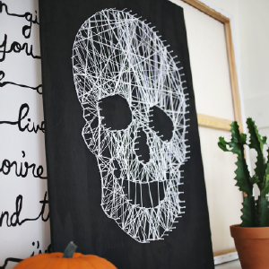
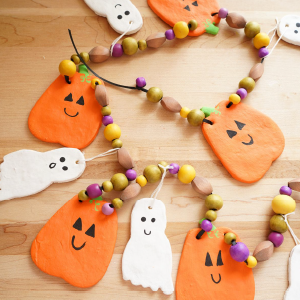

Skull String Art

This is a fun and easy craft to make for Halloween.
It's a great way to add a spooky touch to your home decor,
and you can customize it as much as you'd like!
You can use different colors of string,
paint an impressive background, or choose a unique frame
that stands out.
You're not just limited to a skull, though!
You can make any shape you want, like a pumpkin, bat, or ghost.
Materials:
- Approximately 1/2 inch thick wooden board (the original instructions use a 2x3 foot size board, but you can use any size you like)
- Nails
- Hammer
- String or yarn
- Paint (dark colors work best against light yarn, and vice versa)
- Skull template (or any shape you want)
You can find templates by searching for them online and printing them out, or using a projector to trace
the image onto your board. Once you have your template, you can start hammering in the nails along the outline of the shape.
After all the nails are in place, you can start wrapping the string around the nails to create your design.
You can get creative with how you wrap the string to make different patterns and textures.
Once you're happy with your design, you can hang it up and enjoy your spooky new decoration!
Click here for the full instructions!
Salt Dough Garland

This is a perfect craft for kids and adults alike!
You can make a garland of spooky shapes to hang up in your home, or even make ornaments to give as gifts.
The best part is that you can customize the shapes and colors to fit your Halloween theme!
Switch it up with different beads, buttons, or other embellishments to make it your own.
Additionally, salt dough is extremely cheap and easy to make, so you can make as many as you want without breaking the bank!
Materials:
- Flour
- Salt
- Water
- Vegetable oil
You can find templates by searching for them online and printing them out, and cut them from the dough.
You can also use cookie cutters using Halloween cookie cutter packs, which you can find around Halloween in
craft or dollar stores. Make sure to poke a hole in the top of each shape before baking,
so you can string them together. String beads in between the shapes to add some extra flair to your garland.
Click here for the full instructions!
Paper Cat Craft

Another cheap, simple craft idea for anyone to do! You can make a single cat or a whole family of cats in different sizes and
colors to create a fun display! You can use different colors of paper, or add some personal touch with markers or crayons.
Using this method of paper strips to create a 3D effect is a fun way to make your craft stand out.
You can also use this technique to make other shapes and designs, such as pumpkins with orange and green paper.
Materials:
- Construction paper
- Scissors/a craft knife/a utility knife
- Glue
- Markers or crayons
Accessorize your cat with a bow tie, a collar, or even a little hat! You can also make a spooky background for your cat to sit in front of.
Just make a simple cardboard stand to hold a piece of cardboard vertically, and glue on paper or other materials to create a background.
You can also make a little scene with other paper crafts or cutouts.
Click here for the full instructions!


![A family of four dressed in costume,
with the father and mother at the back of the group, wearing the same black and white striped shirts, black pants,
and black beanies. The father is holding a baby dressed in a burlap money sack with fake money spilling out of it.
In front of the parents is another young child, dressed in a blue long-sleeve shirt, blue jeans, and a tactical belt prop
holding other props. The child's props are a pair of toy handcuffs and a baton. He is also wearing a fake badge and cap.](img\costume_copsAndRobbers.png)